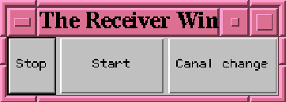

Next: 4 Composition - Structure
Up: 3 Fonctionnalits
Previous: 3.1 L'metteur
On a ici l'cran, la fentre suivante :
Figure 4:
Fentre du rcepteur
 |
Cette fentre ne comporte que trois boutons:
 Start:
Start:
- passe en mode rception. Aprs chaque rception de
transparent le rcepteur sort du mode rception.
Pour des raisons indpendantes de notre volonts (problme d'interfaçage avec le protocole AMP), il est ncessaire de rinitialiser
manuellement le rcepteur aprs chaque rception en appuyant sur le
bouton START.
-
Stop:
- sort du mode rception.
-
CanalChange:
- ce bouton est prvu pour permettre au rcepteur
de changer de canal de rception. Cette fonction n'est pas
implmente car le canal est actuellement cod en dur dans le
protocole AMP.
Denis Arnaud
12/19/1997